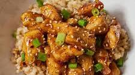

Honey Chicken Bites

Description
Panko-crusted baked chicken nuggets with a sweet and savory honey garlic sauce. So sticky sweet and good!
Ingredients
- 1 lb. boneless and skinless chicken breasts
- salt
- ground black pepper
- 2 large eggs(beaten)
- 1 cup panko
- white sesame seeds(for garnishing)
- chopped scallions or chives (for garnishing)
Honey Garlic Sauce:
- 2 cloves garlic (finely minced)
- 4 tablespoons honey
- 2 tablespoons soy sauce
- 2 tablespoons Thai sweet chili sauce
- 1/4 cup water
- 1/2 tablespoon cornstarch
Instructions
- Preheat the oven to 375°F (190°C).
- Season the chicken with salt and black pepper. Coat each piece of the chicken with the beaten eggs first, then roll in the panko. Repeat to nicely coat the chicken.
- Transfer the chicken to a baking sheet lined with parchment paper. Bake for about 12-15 minutes, or until the chicken turn golden brown. You might turn the chicken pieces over to bake the other side.
- Mix all the ingredients for the Sauce in a small sauce. Whisk to mix well. Cook on low heat until the sauce slightly thickens.
- Transfer the chicken out into a bowl and add the Sauce mixture. Gently toss to coat well. Garnish with the white sesame and scallions/chives, serve immediately.